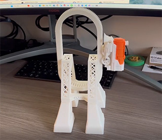
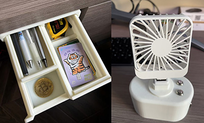
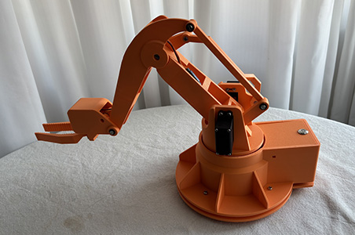
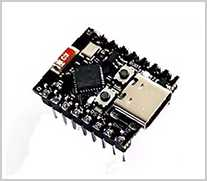
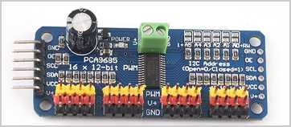
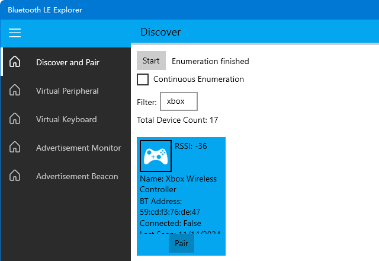

${user_name} @ ${created_at} ${delete_action}
${content}
${comment_replies}
${comment_action}
${comment_reply_form}
../../books/git/BEFORE.md
今年双十一入手了一台3D打印机，我从网上下载了好几个模型，打印效果非常不错：

然而，总是下载别人设计好的模型直接打印，感觉没有发挥出我自身的设计能力。因此我决定自己动手，设计3D模型。
在网上看了一圈科普，发现3D模型设计大概分两类：
考虑到我自己的艺术天赋有限，自然是选择更加困难的工业设计。因此，为了能设计3D模型并用3D打印机打印出来，我决定先掌握SolidWorks这个工业设计软件。
在B站上搜了一下SolidWorks教程，发现阿奇老师的SolidWorks教程很受欢迎，我花了一周的时间快速学习了一下，顺利设计出小抽屉、摇头小风扇：

总结一下SolidWorks建模的核心，就是掌握草图绘制，制作零件，最后用装配体完成装配并模拟机械运动，检查确保没有干涉后，完成最终3D模型。
SolidWorks，轻松拿下！
接下来要挑战高难度的机器人设计，虽然我的最终目标是人形机器人，但还是要遵循循序渐进的原则，先从入门级的机械臂开始，正好阿奇老师还有一门收费的机械臂课程，再花一周时间快速学习，顺利完成机械臂模型：

和课程原版机械臂相比，主要改动如下：
遗憾的是，这个教程虽然能实现最终的机械臂设计，但并没有完成MCU控制与软件操控的功能。不过，这就到咱的专业领域了。
B站上有很多操控机械臂的例子，最常见的是通过电脑连USB线，或者手机来操作。然而，用鼠标或者触控屏幕来控制舵机，只能在开发阶段用，作为产品，是完全不合格的。要轻松地操控机械臂，必须使用无线手柄遥控。因此，我梳理了一下机械臂的产品需求如下：
所以，最终方案确定使用蓝牙手柄，通过蓝牙连接到MCU主控，实现操控机械臂。
现在问题来了，MCU芯片哪家强？
首先排除掉上古时代的51，剩下的选手包括：
比较上述产品，我决定最终选择ESP32，因为它不仅是国产精品，而且在一个芯片里集成了WiFi和蓝牙，以及各种外设通信协议，性价比极高！这意味着不需要任何额外的模块，就可以直接实现蓝牙连接！
在淘宝上找到最便宜的ESP32C3 Mini开发板，价格仅10~20元左右，可以说完全吊打STM32、Arduino和Pico：

因此，MCU主控就选择ESP32C3，外加一个舵机驱动板PCA9685，一个蓝牙手柄（型号待定）。

这里说明一下，为什么我们需要一个单独的舵机驱动板。因为我们这个机械臂使用的是非常便宜的模拟舵机，通过PWM信号控制。虽然ESP32本身可以输出PWM信号，但是，它内部的PWM引脚是有限的，而PCA9685可以同时输出16路PWM信号，也就是可以同时驱动16个舵机！如果需要驱动更多的舵机，还可以级联扩展。此外，驱动多个舵机需要给舵机稳定地供电，不能从ESP32的板子上引出电源，而PCA9685驱动板自带供电输入，免去了我们再单独找一个电源板的麻烦。
ESP32+PCA9685控制舵机的原理如下：
ESP32通过I2C接口向PCA9685发送控制命令，PCA9685会根据控制命令生成PWM信号来控制舵机，这样，我们在编写程序时，只需发送控制命令，无需使用定时器来生成PWM信号，能大大简化控制程序的开发。
接下来要选择蓝牙手柄。在仔细阅读了ESP32C3的相关文档后，我发现蓝牙协议还挺复杂的，最早的蓝牙1.0诞生于1999年，而现在广泛使用的蓝牙4.x和5.x分别诞生于2010年和2016年，它们与之前版本的重要区别在于引入了低功耗（Low Energy）蓝牙，简称BLE（Bluetooth Low Energy），而传统蓝牙被称为经典蓝牙（Classic BR/EDR），这两种协议采用的协议栈几乎不重叠，可以把它俩看作是两种不同的协议。
因此，在涉及到支持蓝牙的具体硬件时，它可以支持以下任意一种或多种协议：
手机和电脑通常会同时支持BR/EDR和BLE（即双模蓝牙），但蓝牙外设如鼠标、耳机、闹钟等，一般仅支持某一种协议。根据ESP32的官方选型手册，ESP32C3仅支持BLE 5.0，因此，我们必须选择支持BLE 5.0的蓝牙手柄。目前，市面上大多数的游戏手柄仅支持经典蓝牙，我在淘宝上问了一圈客服，得到肯定答复的只有这一家名叫盖世小鸡的手柄，因此，最终选择他家的启明星无线手柄，不到100元拿下：
针对ESP32，可以选择的开发环境如下：
如果使用MicroPython，那么通常我们是在应用层开发，这要求固件包含基本的系统和MicroPython运行环境。使用MicroPython最大的问题是，如果要使用的硬件没有现成的驱动，那么我们仍然要用C为MicroPython编写调用接口。此外，MicroPython的运行效率比C要差很多。
使用Arduino IDE开发时，最大的优势是可以使用Arduino丰富的第三方库，缺点是Arduino本身太简单了，简单到连操作系统都没有，入门容易，但并不便于开发复杂的程序。而ESP32官方提供的ESP-IDF开发环境，用CMake和GCC编译，运行在FreeRTOS系统上，可以说开发难度最高，但也最灵活，因为我们可以完全控制底层。
综上分析，我们选择难度拉满，使用ESP-IDF和VSCode开发环境，直接写C代码。这里不需要用到C++是因为C++的虚函数和模板这些高级功能在控制硬件时几乎用不上。
在蓝牙协议中，互相连接的两个设备被称为Client和Server，但是与互联网的Client/Server相反，蓝牙的Client是PC或手机，Server是耳机等配件。另一种更好的说法是主机（Central）和外设（Peripheral），主机就是PC或手机，外设就是键盘、鼠标、手柄、传感器等。一个主机可以同时和多个外设实现蓝牙连接，但一个外设在某个时间段内只能连接到一个主机。
蓝牙建立连接的过程如下：
蓝牙BLE协议实际上比经典蓝牙BR/EDR要简单很多，BLE协议定义了外设能提供的服务（Service），每一个服务都可以通过枚举列出特征（Characteristic），特征分为可读、可写、可订阅等类别，一个温度传感器的某个特征如温度就是可读的，一个闹钟的某个特征如当前时间就是可读可写的，一个手柄的控制按钮就是可订阅的，即用户按下某个键后主机会收到订阅的消息。这些服务和特征用UUID标识，蓝牙标准组织定义了很多通用的ID来标识键盘、鼠标、手柄、温度、湿度、心率等各类传感器，要控制手柄，我们假设厂商预设的ID是符合标准的，所以只需要根据手柄的标准ID就可以读取手柄的输入。
微软官方提供了一个Bluetooth LE Explorer，可以直接从Windows应用商店安装，这样我们可以方便地查看蓝牙BLE手柄的信息：

ESP32C3芯片的角色就是主机，所以我们需要以Host模式启动ESP32C3的蓝牙功能。也可以以外设模式启动ESP32的蓝牙，用外设模式时，我们实际上可以基于ESP32自己开发一个蓝牙手柄或者任何蓝牙外设。
在网上能找到的ESP32连接蓝牙手柄的资料非常少，但好消息是ESP-IDF自带了一个使用Host模式连接HID外设的例子esp-hid-host，HID就是人体工学输入设备（Human Interface Device），手柄、鼠标、键盘都属于HID，直接新建一个ESP-IDF工程并选择使用该模板，我们就得到了一个自动连接手柄的程序。
根据ESP32的官方文档，ESP32支持两种软件协议栈：
该示例默认使用Bluedroid，也可以改为Nimble，但这里既然跑通了Bluedroid，我就懒得测试Nimble了。
打开手柄并开启配对模式（主动广播），再运行代码，可以自动扫描到名字为Xbox Wireless Controller的手柄，然后自动配对连接，接下来就会不停地打印出手柄的输入：
00 80 ff 7f 00 80 ff 7f 00 00 00 00 00 00 00 00
每次接收的输入数据是16字节，猜测这16字节包含了手柄所有键的状态。我们简单按下手柄不同的按钮和摇杆，就能观察到16字节输入的变化，可以确定各个字节的数据表示如下：
摇杆的X、Y轴数据分别用两个小端序的uint16表示，范围是0~0xffff：
(0x0, 0x0) (0xffff, 0x0)
┌───────────────────────┐
│ │
│ │
│ │
│ │
│ │
│ x │
│ (0x8000, 0x7fff) │
│ │
│ │
│ │
│ │
└───────────────────────┘
(0x0, 0xffff) (0xffff, 0xffff)
当摇杆位于中心时，X的坐标是0x8000，Y的坐标是0x7fff，这一点比较奇怪，虽然只差1。
L2按钮的力度用两个uint8表示，第一个uint8范围是0~0xff，表示精确的力度，第二个uint8的范围是0~3，表示较粗的力度。R2同理。
A、B、X、Y、L1和R1编码如下：
View和Menu按钮编码如下：
因此，我们可以直接解析这16字节如下：
typedef struct __attribute__((packed)) { // __attribute__((packed))是gcc扩展，表示紧凑字段，不做内存对齐
uint16_t left_stick_x; // 左摇杆
uint16_t left_stick_y;
uint16_t right_stick_x; // 右摇杆
uint16_t right_stick_y;
uint8_t left_trigger; // 左上L2按钮
uint8_t left_trigger_level;
uint8_t right_trigger; // 右上R2按钮
uint8_t right_trigger_level;
uint8_t any_1;
uint8_t buttons; // A,B,X,Y,L1,R1按钮
uint8_t ex_buttons; // VIEW, MENU按钮
uint8_t any_2;
} ctrl_input_data_t;
接下来在示例代码的基础上做如下修改。
默认的示例代码会自动连接扫描到的最后一个HID输入设备，我们改为按名字过滤，仅连接到名字为Xbox Wireless Controller的设备。注意这个名字是通过Bluetooth LE Explorer看到的，如果你的手柄不是这个名字，就改成实际的手柄名字。
然后定义连接状态：
enum CTRL_STATE
{
SCANNING, // 正在扫描
OPENING, // 正在打开
INPUT // 正常输入
};
当未扫描到手柄时，默认的示例代码会自动停止运行，我们改为暂停5秒后继续扫描，死循环不退出：
void hid_scan_task(void *pvParameters)
{
for (;;) {
vTaskDelay(5000 / portTICK_PERIOD_MS);
if (ctrl_state == SCANNING) {
hid_scan();
}
}
}
当连接到手柄后，我们看到接收手柄数据的频率非常快，需要对输入数据按200ms的间隔采样，即每秒钟只接受5次输入：
case ESP_HIDH_INPUT_EVENT: {
// 处理手柄输入:
const uint8_t *bda = esp_hidh_dev_bda_get(param->input.dev);
if (param->input.length == CTRL_INPUT_DATA_LENGTH) {
// 每200ms采样输入:
int64_t now = esp_timer_get_time();
if (now - ctrl_input_time > 200000) {
// 复制输入数据并发送消息到队列:
memcpy(&ctrl_input_data, (char *) param->input.data, CTRL_INPUT_DATA_LENGTH);
xQueueSend(ctrl_input_queue, &ctrl_input_data, 0); // 如果上一次的输入数据还未处理，则不等待直接丢弃
ctrl_input_time = now;
}
}
break;
}
这样我们就可以在另一个任务中从队列取出手柄输入并处理：
void control_task(void *pvParameters)
{
// 从队列取出手柄信号并控制舵机:
ctrl_input_data_t input;
for (;;) {
if (pdTRUE == xQueueReceive(ctrl_input_queue, &input, 0)) {
// TODO: 处理输入
}
// 每读取一次输入后，等待100ms，即每秒仅允许10次输入
vTaskDelay(100 / portTICK_PERIOD_MS);
}
}
现在，蓝牙手柄的连接和输入问题基本解决，下一步是准备通过I2C接口驱动PCA9685并控制舵机。
在网上找了一圈，发现一个用PCA9685控制LED灯的驱动，稍做改造，变成一个控制舵机的驱动，核心函数如下：
// 设置PCA9685的频率:
void pca9685_set_freq(uint16_t freq)
{
// Set prescaler
// calculation on page 25 of datasheet
uint8_t prescale_val = CLOCK_FREQ / (4096 * freq) - 1;
// The PRE_SCALE register can only be set when the SLEEP bit of MODE1 register is set to logic 1.
uint8_t mode1Reg;
uint8_t any;
ESP_ERROR_CHECK(generic_read_two_i2c_register(PCA9685_MODE1_REG, &mode1Reg, &any));
mode1Reg = (mode1Reg & ~PCA9685_MODE1_RESTART) | PCA9685_MODE1_SLEEP;
generic_write_i2c_register(PCA9685_MODE1_REG, mode1Reg);
ESP_ERROR_CHECK(generic_write_i2c_register(PCA9685_PRESCALE_REG, prescale_val));
// It takes 500us max for the oscillator to be up and running once SLEEP bit has been set to logic 0.
mode1Reg = (mode1Reg & ~PCA9685_MODE1_SLEEP) | PCA9685_MODE1_RESTART;
ESP_ERROR_CHECK(generic_write_i2c_register(PCA9685_MODE1_REG, mode1Reg));
vTaskDelay(5 / portTICK_PERIOD_MS);
}
// 设置指定端口的PWM:
void pca9685_set_channel_pwm(uint8_t channel, uint16_t pwm)
{
uint8_t pinAddress = PCA9685_LED0_REG + (channel << 2);
ESP_LOGI(TAG, "set channel %d (addr = %d) pwm: %d", channel, pinAddress, pwm);
ESP_ERROR_CHECK(generic_write_i2c_register_two_words(pinAddress, 0, pwm));
}
使用PWM信号控制舵机的原理非常简单，PWM是一种占空比信号，以常用的180°舵机为例，它要求PWM信号周期为20ms，即50Hz的频率，根据高电平持续时间决定舵机的偏转角度：
控制高电平持续时间的范围0.5~2.5ms，我们就可以在0~180°范围内控制舵机。
PCA9685输出PWM的原理是针对每个舵机通道，内部有两个寄存器，分别存储open（开启高电平）和close（开启低电平）的计数器周期。计数器从0~4095反复计数，假设open=0，close=2047，则每个计数周期我们会得到如下的信号：
┌─────────────┐ ┌─────────────┐ ┌───
│ │ │ │ │
───┘ └─────────────┘ └─────────────┘
0 2047 2048 4095 0 2047 2048 4095 0
可见上述信号占空比恰好为50%。
如果open=0，close=1023，则我们可以得到占空比为25%的PWM信号：
┌──────┐ ┌──────┐ ┌───
│ │ │ │ │
───┘ └────────────────────┘ └────────────────────┘
0 1023 1024 4095 0 1023 1024 4095 0
如果open=100，close=1123，输出的PWM信号占空比仍为25%，但相位变了：
┌──────┐ ┌──────┐ ┌───
│ │ │ │ │
─────┘ └────────────────────┘ └────────────────────┘
0 100 1123 1124 4095 0 100 1123 1124 4095 0 100
有些需要用到相位的控制就可以设定open，这里控制舵机我们不需要相位偏移，因此open始终设置为0，根据close就可方便地计算占空比：
0.5/20，计算close=0.5*4096/20-1=101；1.5/20，计算close=1.5*4096/20-1=306；2.5/20，计算close=2.5*4096/20-1=511；(2.5-0.5)*x/180+0.5，计算close=((2.5-0.5)*x/180+0.5)*4096/20-1。因此，我们输入open=0，close为根据目标角度计算的整数值，就可以控制舵机角度（注意：存在一点误差）。
下一个问题是，舵机要求的PWM信号周期是50Hz，而PCA9685自带的时钟频率高达25MHz，因此，输出的PWM信号周期是25M/4096=6.1KHz，显然不满足50Hz的要求。
解决这个问题是使用分频器，2分频可以把25MHz降为12.5MHz，4分频可以把25MHz降为6.25MHz，而我们需要的频率是50*4096=204.8KHz，分频器计算为25M/204.8K≈122。
因此，当我们调用pca9685_set_freq(50)设置50Hz的频率时，我们并不是把50写入PCA9685，而是先计算分频器的数值，再把这个数值写入PCA9685的寄存器。当我们写入122时，PCA9685内部时钟频率仍为25MHz，但每122个时钟周期才会驱动一次计数，完成从0到4095的完整计数需要122*4096=499712≈500K个时钟周期，正好对应25M/500K=50Hz。
数字芯片内部的寄存器都是整数，我们并不能精确地把频率控制到50Hz。PCA9685官方手册给出的分频器计算公式为：
最后是根据输入的舵机角度计算PWM的close并设置PCA9685的对应寄存器：
// 输入舵机的角度0~180:
void set_servo_pwm(uint8_t channel, int16_t angle)
{
// 计算占空比:
uint32_t pwm = RA_SERVO_PWM_RANGE * (uint32_t)angle / RA_SERVO_ANGLE_RANGE + RA_SERVO_PWM_MIN;
// 设置占空比:
pca9685_set_channel_pwm(channel, (uint16_t) pwm);
}
联调后刷入到ESP32C3，上电测试，如果一切正常，就可以将舵机和板子安装到机械臂中。
现在，用蓝牙手柄遥控机械臂，看看最终效果：
本项目的SolidWorks设计模型和控制代码完全开源，需要的同学自取：